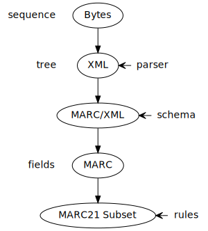
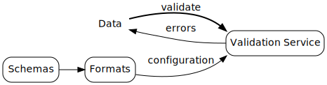
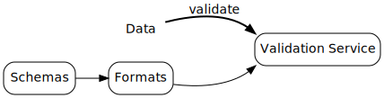

Jakob Voß (VZG)
ELAG 2022 Conference, Riga
2022-06-09
What is data validation?
Why is data validation difficult?
How can data validation be made easy?
Where can I use it?
Eventually all data is sequences of bits
Data must conform to expected shapes
Data validation = check expectations
completeness
e.g. all records have year
constraints
e.g. year < 2022
consistency
e.g. birth < death (except time-travellers)
completeness
internal: e.g. all authors have names
external: e.g. all authors are listed
code: unit tests
against software rot
data: data validation
against propagation of errors
Big data & data
integration
e.g. bibliographic data + knowledge graphs
Many formats & different expectations
Diverse validation technologies
Custom parser/rules (if … then …)
Schema languages
| JSON | JSON Schema |
| XML | XSD, DTD, Schematron |
| RDF | SHACL/ShEx |
| String | RegEx, EBNF |
| MARC | Avram |


data (file, URL, file or stream) andformat identifier (+ optional version)
message (+ optional positions)
Web service to validate data
Configured with formats and schemas
HTTP GET & POST
Web interface
Command line (requires configuration)
curl https://format.gbv.de/validate/vzg-article \
--data-binary @article.jsonRegistry of known formats and schemas
No local installation required
Unified API
Authority based
done by experts is good by definition
Evidence based
continuous measuring & improving

Validation Server
Configure formats with schemas
Public instance format.gbv.de/validate
Support more schema languages
(Avram, EBNF, Schematron SHACL/ShEx…)
Support validating MARC21
Show error context
Build-in rules of black-box library system 😕
Validator engines for each schema language
(e.g. xmllint) 😐
Metadata Quality Assurance Framework 😀